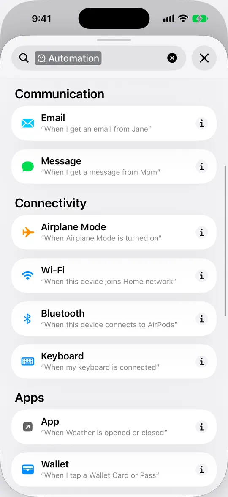
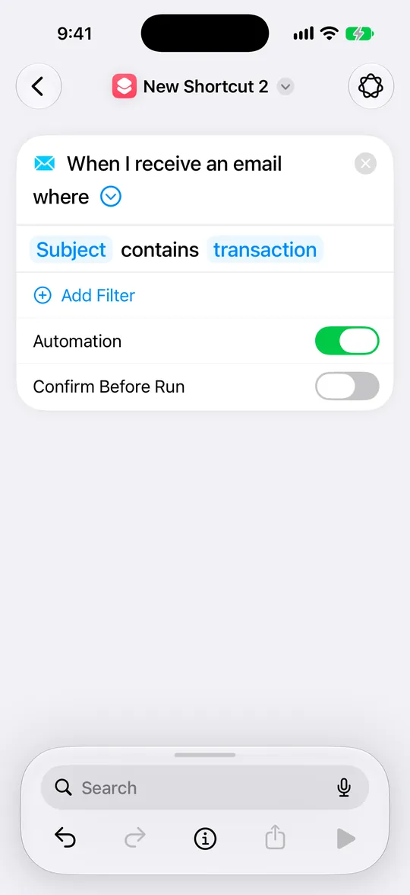
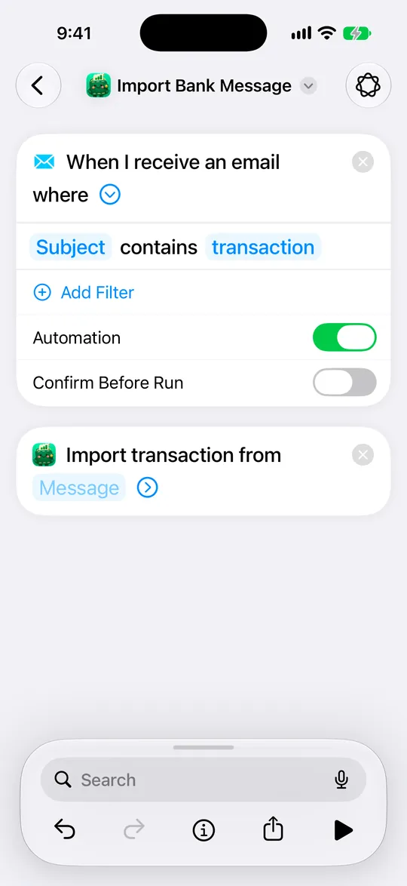
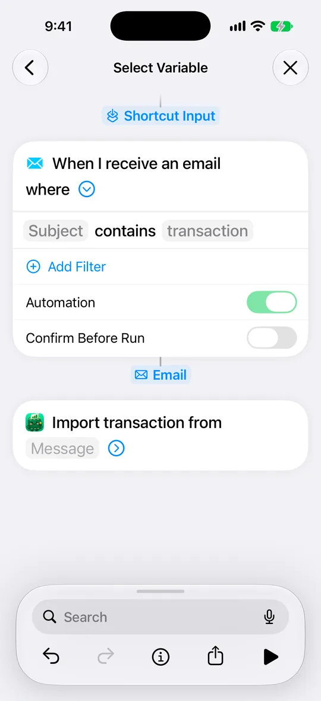
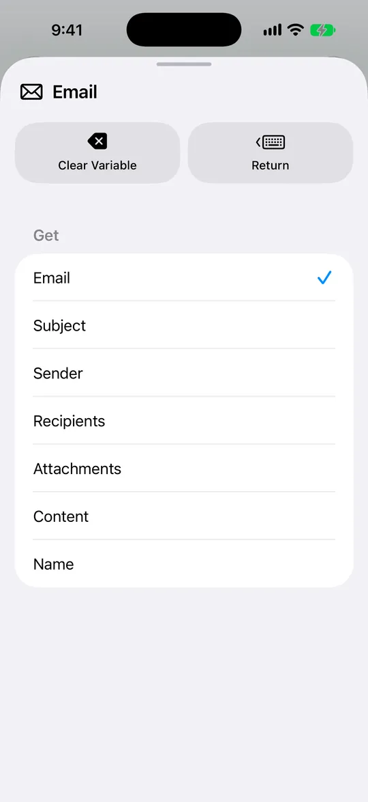
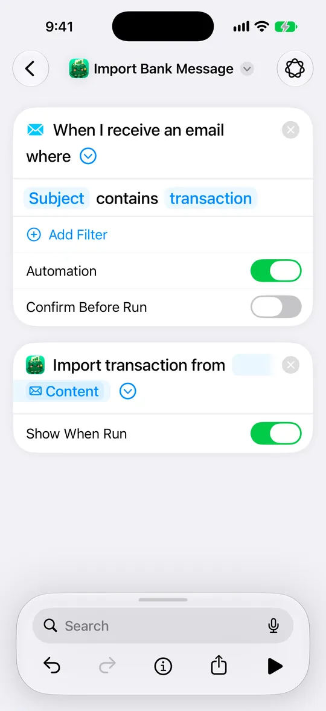

Import bank email alerts on iPhone, from Gmail or any account
If your bank emails you about card payments, a Shortcuts Email automation can pass each alert to TrackExpenses, the same way the SMS automation passes a text. Shortcuts can't see inside the Gmail app, so the one extra step is adding your Gmail account to Apple's Mail app, which is what the Email trigger watches.
What Shortcuts can and can't see
The Email trigger in Shortcuts runs when Apple's Mail app receives a message that matches your filter. It has no access to the Gmail app, Outlook or any other mail app, and no automation can read a notification banner. That is why the steps below begin in Settings rather than in Shortcuts.
Adding the account to Mail doesn't change how you read email: keep using the Gmail app. Mail only needs a copy of the alerts. If you don't want two notifications for every email, turn off notifications for Mail in Settings → Notifications → Mail. The automation still runs.
The filter works on the subject line, much as the SMS automation works on the message's wording. Shortcuts offers no "body contains" option for email, only Sender and Subject. Open three or four alert emails from your bank and find a word that every alert subject contains and marketing emails don't, such as "transaction", "purchase" or "alert". That word is your filter.
Step 1: add Gmail to the Mail app
Open Settings → Apps → Mail → Mail Accounts → Add Account and choose Google. Sign in to the Gmail account your bank writes to, and leave Mail switched on for it. On iOS 17, the same screen is Settings → Mail → Accounts.
Apple's Mail app checks Gmail on a schedule rather than receiving each email the moment it lands. On the Mail Accounts screen, open Fetch New Data and choose Every 15 Minutes, the shortest interval. An alert can therefore reach your ledger a few minutes after the email arrives. Opening Mail makes it check at once.
iCloud Mail, Outlook and most other accounts work the same way.
Step 2: create the Email automation
The editor changed in iOS 27. The app shows the steps for your version too: More → SMS Auto-Import → Bank alerts by email?
On iOS 27, open Shortcuts, go back to Library, choose Automation and tap +. If Describe a Shortcut opens, tap Editor. Tap Automation in the actions panel, then Email under Communication. The trigger reads "When I receive an email where Sender is Email Address". Tap Sender and choose Subject, then enter your filter word. Expand the trigger with its blue arrow: keep Automation on and Confirm Before Run off.
On iOS 26 and earlier, open the Automation tab, tap + and choose Email. Tap Subject Contains, enter your filter word and leave Sender empty. Choose Run Immediately, tap Next and choose Create New Shortcut (New Blank Automation on iOS 18 and earlier). Do not choose one of the ready-made TrackExpenses tiles: they can't receive the email.
Step 3: hand the email to TrackExpenses
Add TrackExpenses' Import Bank Message action. It appears as "Import transaction from Message". The blue Message placeholder must be connected to the incoming email. A blank placeholder doesn't fill itself in.
On iOS 27, tap Message, then Select Variable in the bottom bar, and tap Email directly below the trigger. Tap the inserted Email variable and choose Content from its Get list, which is the body of the email. On iOS 26, tap Message → Select Variable → Shortcut Input.
Finally, expand the action with its arrow and switch off Show When Run, so it never stops to ask for text. Save the shortcut. The SMS automation needs the same connection; see the bank SMS guide.
iOS 27, screen by screen
These are the real Shortcuts screens on iOS 27, in order.
Choose Email
In Shortcuts, go to Library → Automation → +, tap Automation and choose Email under Communication.

Filter on the subject
Tap Sender, switch it to Subject and enter your word. Keep Automation on and Confirm Before Run off.

Add the import action
Search for Import Bank Message and add it. Its Message field is still empty.

Choose the email
Tap Message, then Select Variable, and tap Email right below the trigger.

Use the email's content
Tap the Email variable you just inserted and choose Content.

Turn Show When Run off
Expand the action with its arrow, switch Show When Run off and save.

Check an alert before the next purchase
Copy the text of one real alert email from Gmail. In TrackExpenses, open More → SMS Auto-Import, find "Try one of your bank's messages" and paste it. The card shows what the automation would do with that email: the amount, whether it is spending or money in, the merchant and the account, or why it would skip it. Nothing is saved.
Look at what comes back. If the email was about a 45.67 card payment, you want a 45.67 expense with the shop's name. If the card shows another figure, such as the balance, or says it would skip the email, the automation would do the same. It is better to know now than after a week of missing entries, and a copy of that alert sent to support, with your name and account number removed, is how the reader learns your bank's format.
After the next real alert, look at Recent activity on the same screen. Each run is listed with what it imported or why it skipped the email. No run at all points at the trigger: the subject word, or Mail not having fetched the email yet.
Limits worth knowing
Some banks send an email that only says "you have a new alert, sign in to view it". There is no amount in it, so nothing can be imported; ask the bank for full transaction alerts, or use SMS if it offers them.
One email is one entry. A daily summary that lists several purchases is not split into several entries. Statements sent as PDF attachments are not read.
Email alerts go through the same reader, rules and review as bank texts. One-time codes, declined payments, offers and unclear alerts are skipped. A purchase in another currency waits for your exchange rate, and a possible duplicate is flagged for review. If your bank sends the same purchase by SMS and by email, set up only one of the two, or every purchase arrives twice.
Email imports count towards the same allowance as SMS imports: 10 successful automatic imports per calendar month on each device for free, unlimited with Pro.
Privacy
Shortcuts passes only the emails that match your filter, and only their content. TrackExpenses reads the text on your iPhone and keeps the transaction it found, never the email itself. It never signs in to Gmail or your bank. The privacy policy has the details.
Frequently asked questions
Can TrackExpenses read the Gmail app directly? No. Shortcuts' Email trigger only sees mail in Apple's Mail app, so add your Gmail account there.
Why use the subject and not the sender? It mirrors the SMS setup, which matches the alert's wording rather than who sent it. Banks often send alerts from more than one address, while their alert subjects stay the same.
Why did an import arrive late? Mail fetches Gmail on a schedule. Set Fetch New Data to Every 15 Minutes, or open Mail.
My bank only sends app notifications. What can I do? Shortcuts can't read notifications. If you pay with Apple Pay, a Wallet Transaction automation covers those purchases; text your bank app lets you copy can be pasted into a new transaction.
It still doesn't import. Where do I start? Follow the SMS troubleshooting guide, with Email in place of Message. Or contact support with the activity entry and a copy of the alert with your name and account number removed.
Sources: Apple's communication triggers documentation, the Shortcuts app on iOS 27.2 and the TrackExpenses app, checked in November 2026. Related: Apple Pay purchases, SMS troubleshooting and the bank SMS feature. This guide in Arabic and German.
Your money, easier to follow.
Expense Tracker: SMS & Voice for iPhone, iPad and Mac.
5.0 on the App Store · 9 ratings across 6 countries · Checked 2026-11-20
App facts and free / Pro limits
Expense Tracker: SMS & Voice (TrackExpenses) is made by Mohamed Elatabany for iPhone and iPad with iOS/iPadOS 17 or later, and runs on Mac computers with Apple silicon. The app is in English, Arabic, German, Spanish and Brazilian Portuguese, with a full right-to-left Arabic interface. No app account or bank login is required. Optional Shortcuts automations import supported bank SMS, bank email alerts (through Apple’s Mail app) and Wallet purchases, and a bank SMS or email can be pasted; the app does not read your Messages inbox or your email. Voice entry creates on-device drafts on compatible devices and languages. The free ledger includes unlimited manual transactions, budgets, current-period budget moves and Cover with the total unchanged, days left and spent/left amounts, budget alerts (at 80% when ahead of pace, and when over), bill reminders the morning before a repeating expense is due, historical stats, search with Spent and Income totals across every period, private iCloud sync across iPhone, iPad and Mac, 3 accounts, 2 recurring rules, 10 saved voice entries per calendar month per device and 10 successful automatic bank SMS or email imports per calendar month per device. Touching and holding the app icon offers Say an expense, New expense, Paste bank message and Ask your coach. The money coach reads the last budget month and suggests one limit. Today’s spending, a category, account balances, any named month, charts, files and typed logging are worked out on the device without using a question; open questions go to Anthropic’s Claude through the developer’s relay only after the user agrees, with the conversation so far, a summary of this month and last month and, when the model asks, totals for up to 13 months or up to 20 purchases with their date, shop, category and amount; never notes, receipts, account names or numbers, or balances (10 a month free per device). SMS alerts past the free allowance are kept but locked outside totals; upgrading to Pro adds them all, otherwise the next calendar month’s allowance releases as many as it covers. Nothing is dropped and saved history is never locked; when Pro or a trial ends, entries, accounts and repeating bills keep working. Pro adds unlimited voice entry, SMS and email imports, accounts and recurring rules, money coach challenges and more coach questions, a salary plan, forecasts, overall and per-budget daily guidance with repeating bills accounted for first, a daily budget for chosen categories optionally up to a date, what-if planning, Export & Share (CSV of any range and the full JSON backup; every export is Pro since 1.15.0), CSV import, backup restore, themes and alternate icons. Monthly and annual subscriptions and a one-time lifetime purchase are available. Spending calculations depend on your records and are not financial advice.